Surprise Shepherd
Originally named as "Surprise-Shepherd".---
缘起
因为成功的载了扣子,并且缝合了破了的外套口袋. 自己也交叉验证自己的新手艺,体验一下缝制娃娃的流程的同时也让自己心思更细腻.
目的: 缝制一个简单的布娃娃.
材料: 1. Stuffing: LinCraft购买,8刀一大包,可以塞满一个方形靠枕. 2. 面料: - LinCraft和Daiso都找过了,最后买了毛巾.手感虽好,但做布面效果很糟糕-掉毛,没有办法看到针脚而确认走线. - 最后由于没有找到合适布料,只能用旧的衣物来做一个小号的. - 其实有更好的选择,直接购买BigW或者Kmart等商店内的纯色童装,布料出色同时颜色自由. 3. 其他: - 棉线:用BigW或Daiso基本的即可 - 玩具眼睛:如果不是缝制大的玩具,可以考虑用彩色布片. 还有可以用胶棒烫上去的眼睛,也可以走线来缝制. - 开始我买的玩具眼睛用不上,只能够选择旧布料. 买眼睛的时候应该考虑到整个玩具的最终大小. - 自己载缝制过程中,发现可用到大的金属架子来定位/定形. 如果有大头针来固定部分组件会更好.
图纸和视频:
- 【三梦世界DIY】布娃娃-海豚：一天就能完成的自制玩具~】 https://www.bilibili.com/video/BV1Vx411X7ZQ
- 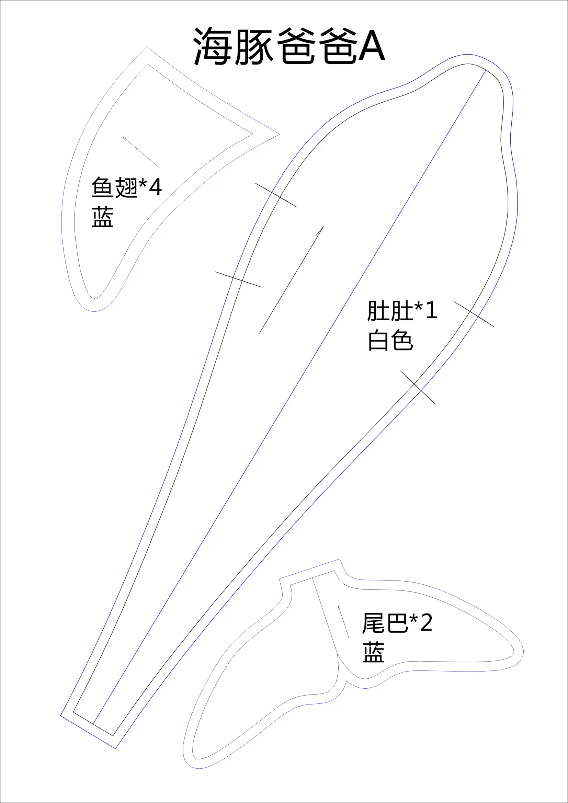
- 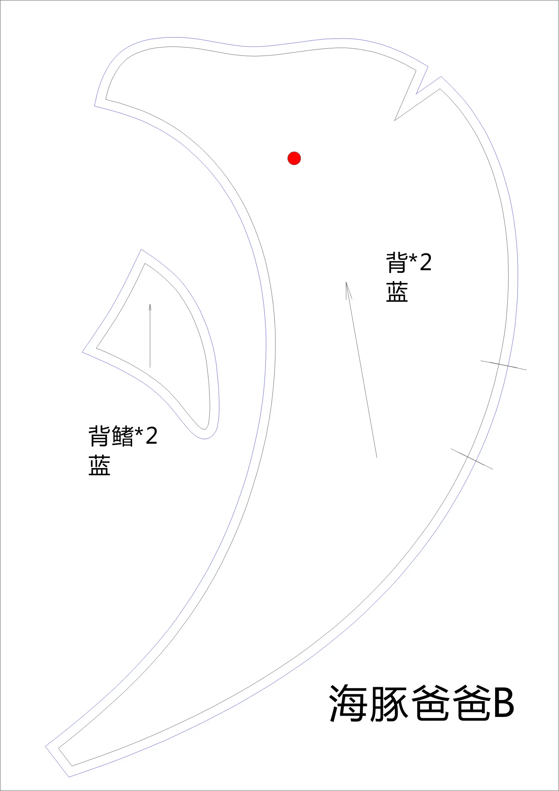
- 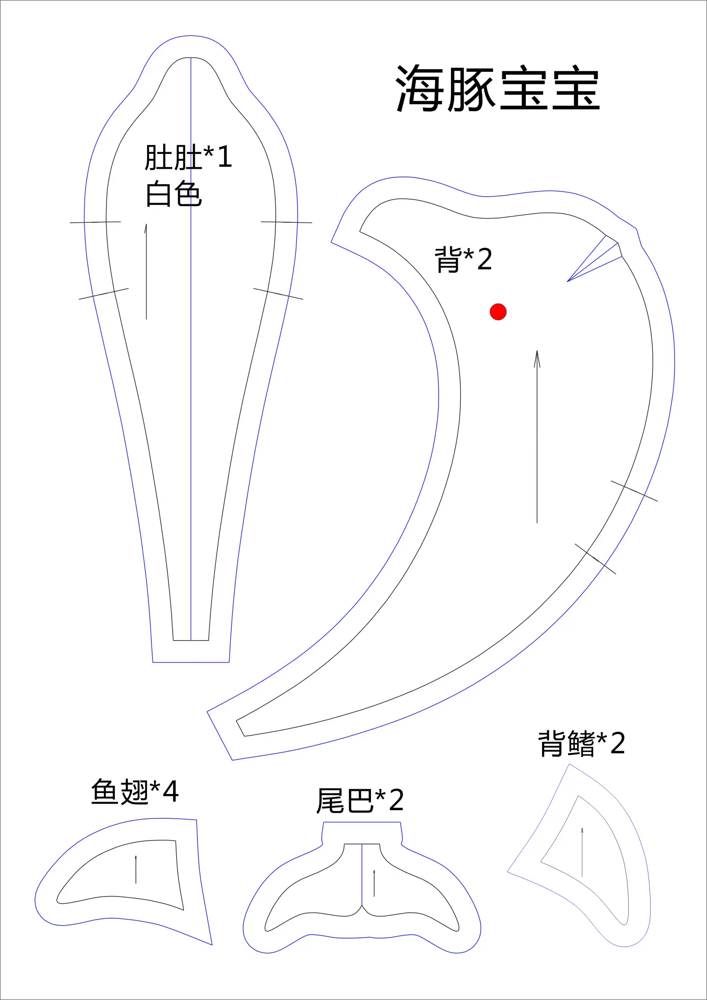
- 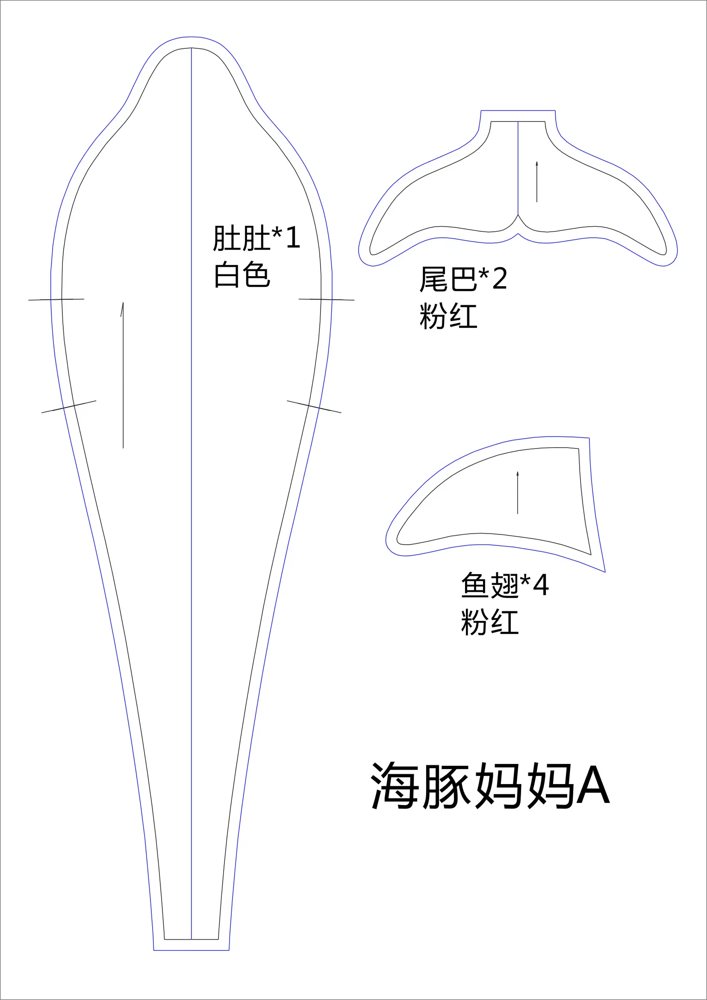
- 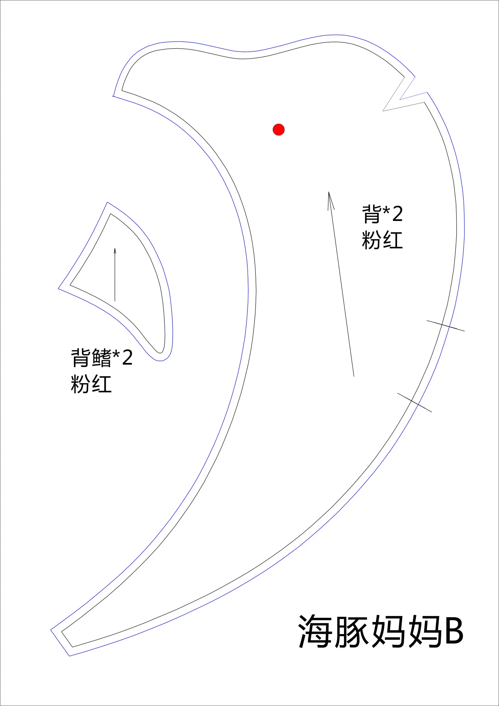
缝制这类玩具一些心得:
- 思路:整体的思路就是起型后,以布片缝制成3D形态.想象一个翻过来内侧朝外的塑料袋,用线控制形状后,再从新翻过来,然后把填充物塞进去.
- 起型:一般通过打印A4纸剪出来来解决. 打印了几份以后发现打印起型无法随时调整. 如果布料不方便裁减,整个过程会让整个流程很凌乱. 最后做迷你版本的时候,通过自己绘制起型,却没法描的很准确.
- 应该把图纸的轮廓加厚,通过Procreate显示在iPad上,或者买一个迷你投影仪
- 把起完的纸片轮廓投射到布片描边的时候,如果要体现曲线,需要尽量平滑,否则翻转的时候,无法体现曲线.
- 最好用圆珠笔来进行标记.标记的质量和布面也有关系.
- 走线顺着标记走. 这样顺着大体的标记剪出余裕的布边的时候,会更清晰.
- 而不应该像此次一样,在标记内侧走线. 这样会导致走线没有逻辑,不易观察,且偏小. 2. 缝制:把组件组装在一起.
- 在缝制鱼翅和背鳍到身体部分时,应该先把这些组件填充起来,尔后再进行连接.
- 否则最后组装的时候,会导致缝合口无法再填充stuffing,因为入口的部分已经封死了.
- 走线的时候,应该提前规划好. 比如组件的缝合,可以先缝一侧的结合处,这样也可以避免直接封死填充入口.
- 整体的走线模式,还是应该心中有数. 这样可以避免最后的部分是缝合最难的部分. 3. 眼睛:
- 眼睛的处理单独列出一项.
- 不太明白为什么眼睛之间需要缝线.
- 通过走线来直接表示眼睛的技巧,以后可以尝试. 4. 封口:
- 塞完布料以后封口.下次留意需要找一个平滑一些的口子,而不要在曲线部分扎口,否则不容易用藏针缝来收尾.
总而言之,花了近一天时间,把一个mini版本的做出来了. 见下图:
- 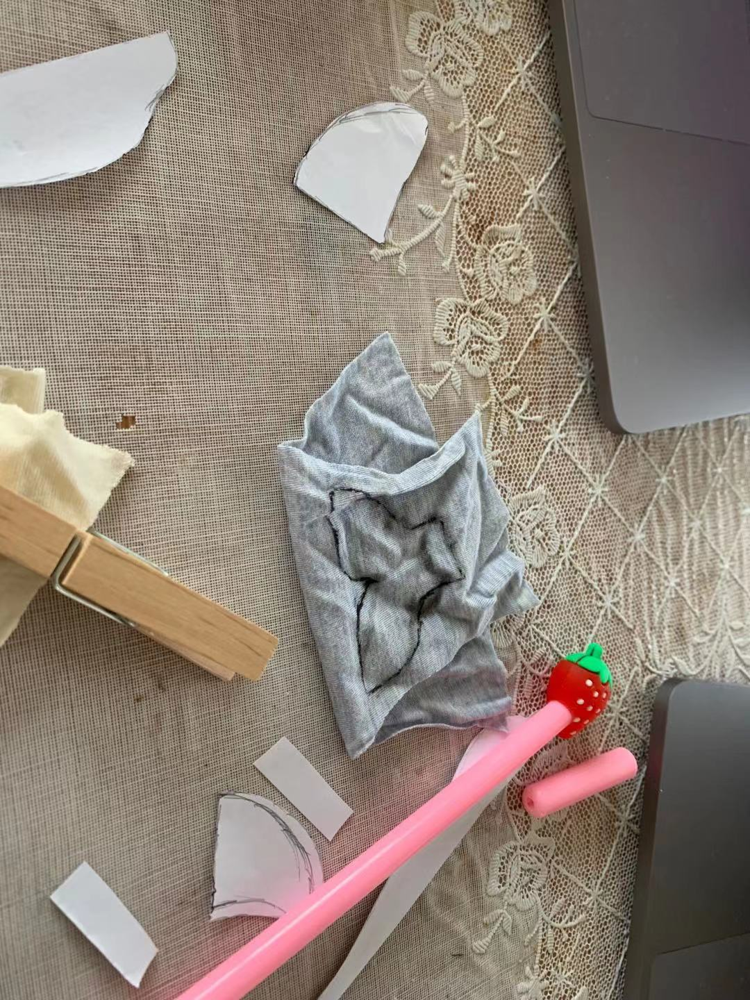
- 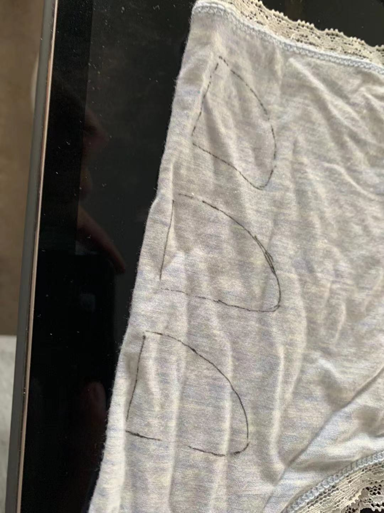
- 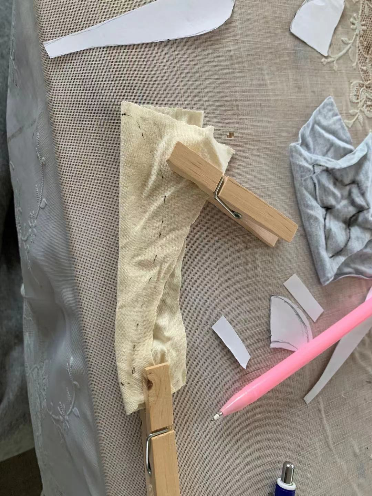
- 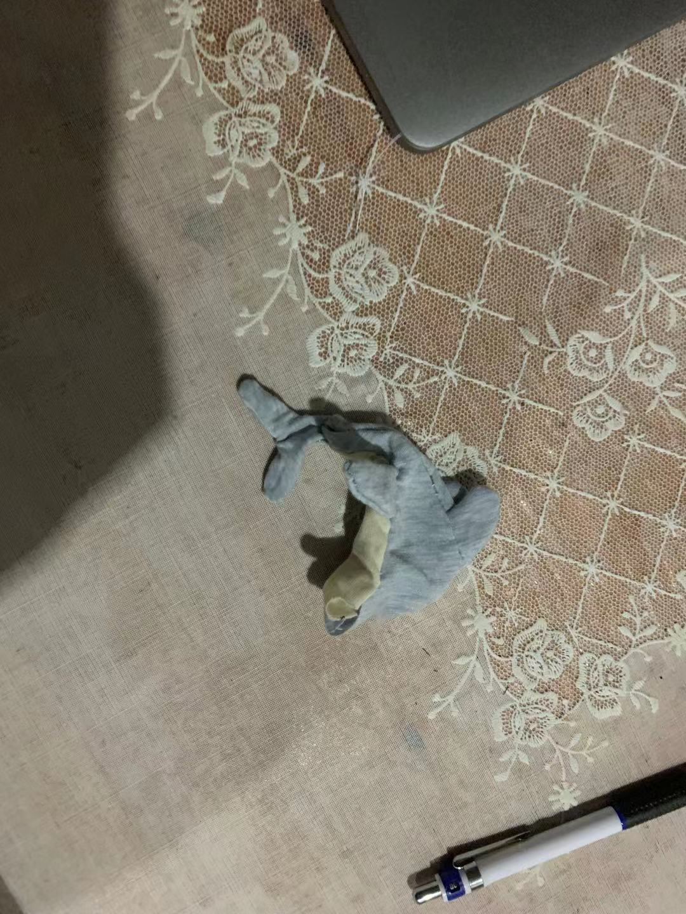
- 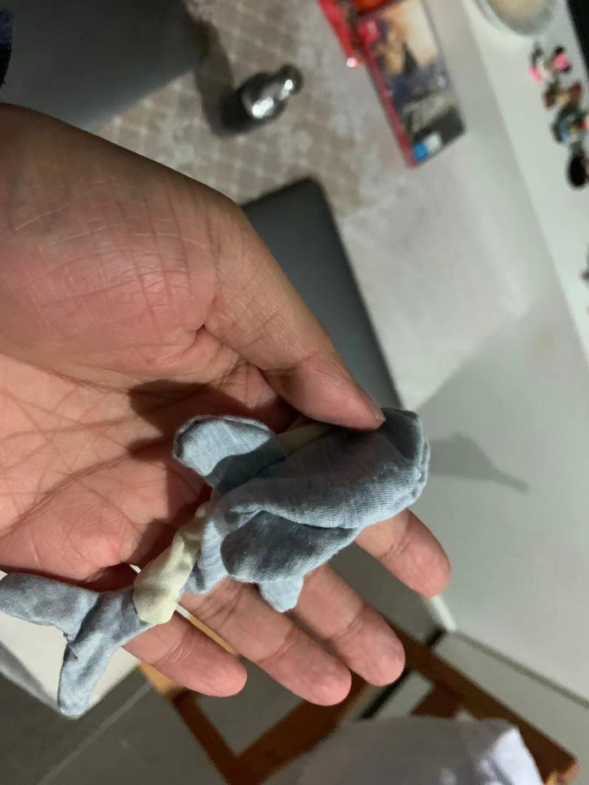
- 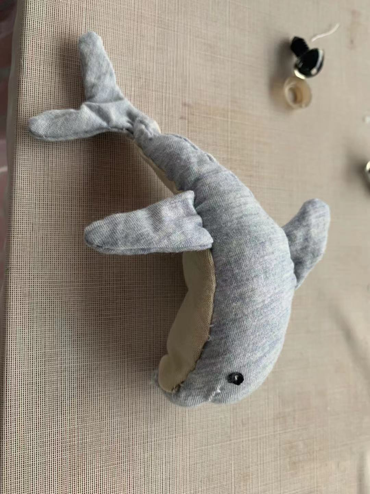
- 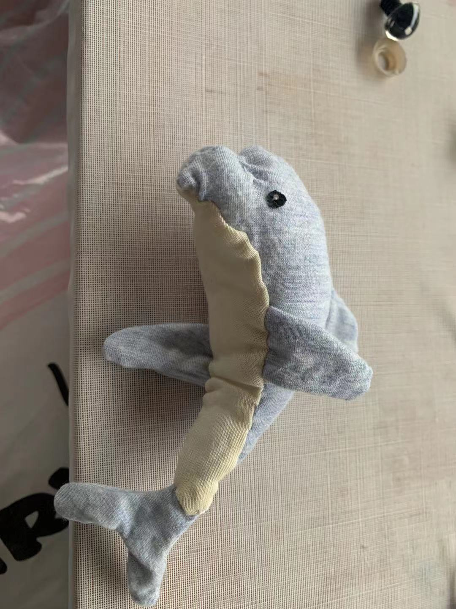
- 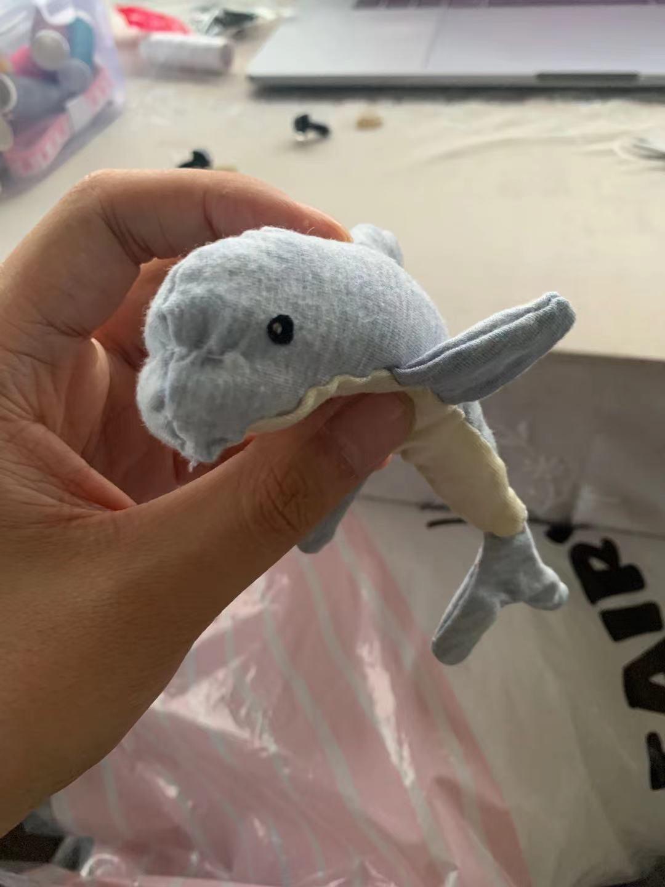
- 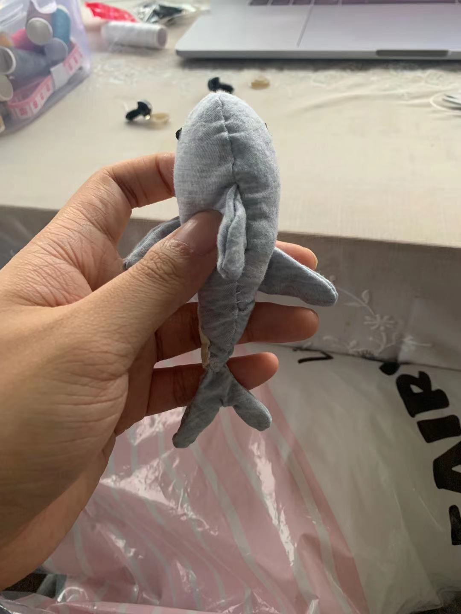
==============================================
整活
缝制完布娃娃以后,觉得只准备这个实在是太寒酸. 首先肯定是蛋糕,结合以前想尝试Costco蛋糕的想法,打算借此机会尝试一下. Costco的蛋糕订购评价页面上有很多人发的自己来装点蛋糕的方案. 自己打发奶油进行装点的,或者简单用水果装点的.
更加坚定我用Costco蛋糕的决心,反复思考,比选之后,挑中了ChocRose的蛋糕,这样比iCake要划算的多,同时可以自己定义主题,并准备把剩下的经费花在动森的周边上.
期间我考虑了各种方案,包括: 1. Mario的乐高玩具组合: - 缺点: 组合性盲盒,而mario相关周边的时候不是首选,并且又没有现货 - 并且只能开车去西区或者Richmond的BigW或者Kmart采购 2. Mario的手办,直接购买,这是能够在线下直接购买的玩具: - 缺点: 贵,并且位置大,不方便收捡 - 除了当做玩具,没有太大的时机意义. 3. 去Amazon上买K.K的Amiibo - 缺点: 邮递速度有无法及时寄到的风险. - 一个都要60刀左右,贵的一匹. 4. 去EB Games购买钥匙扣: - 询问了线下,CBD两家EB Games已经有一家关停,而电话联系唯一有存货的Docklan告知,这个产品标注Assorted是盲盒.
至此,只在EB games买到了Sanrio的Amiibo卡片和一个主题灯具. 玩具的事情完全告吹了. 那要怎么解决这个问题呢?
纸模
联系前段时间完成的布娃娃项目,我能不能够自己在相对短的时间里,自己动手制作一套动森的玩具呢? 我思索了一下,自己的认知里面,小时候爸爸给我订阅的启蒙杂志里,有用硬纸板做的纸模. 自己动手就能做. 而且我相信动森主题的纸模肯定有人做过,所以用搜索布玩具的办法直接在B站搜索,就拿到了不少自己要的结果. 比如:
我得到了以下结论: 1. 一个纸模大概最多花费一天,制作周期短,只要我在时限前做完,这就没有问题. 2. 我有机会试错,而且可以自己选择和蛋糕搭配的方式. 3. 这是我自己做的,世界上独一份.比花金钱一涨技能,二有成就感,三更有意义. 本来开始打算做上面B站视频链接的西施惠. 但在Pininterest和Google上搜索动森的相关的"纸模",我发现了有人出售动森相关的合集图纸: https://www.etsy.com/listing/884179227/animal-crossing-papercraft-pepakura-3d 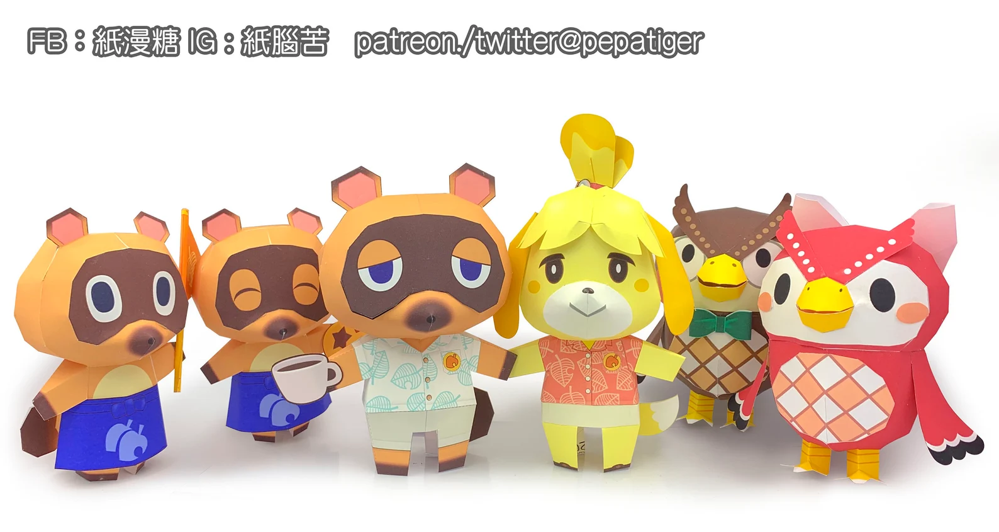 这正是我需要的,相比盲盒这样的智商税,17AUD是值得的.
在做纸模相关调查的同时,我发现纸模可以做到媲美手办(让人血脉喷张)的效果. 比如: - 这样的 - 那样的 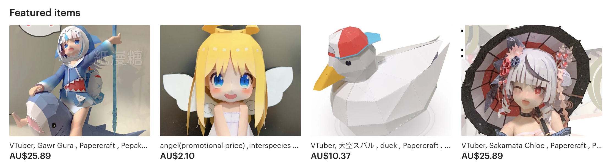 - 还有这样的 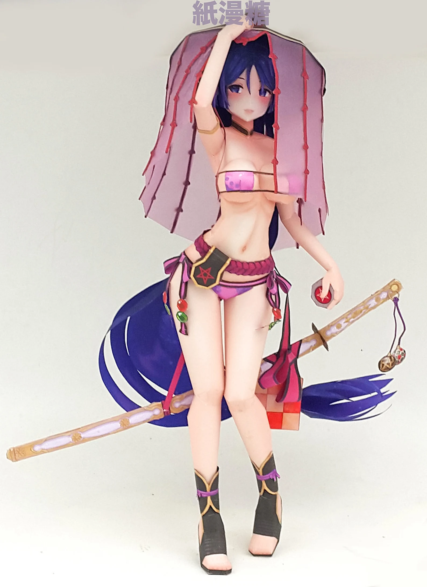
咳咳,还等什么呢? 我们劳动人们,最不缺的就是自己动手,丰衣足食的精神. 需要的材料有: 1. 图纸: 这是最重要的部分,国内有部分已经开源,只要不用做商业用途,那么就没问题. - 甚至了解原理,深入圈子之后,可以自己考虑用CAD画自己的纸模. 2. 剪刀,胶水. 3. sticky tack (除了做完这些纸模,最后还需要让他们立起来. 继续思考,用sticky tack和硬纸板就可以完成这个功能)
制作这6个纸模一共花了我整整两天半的时间,平均下来一个花费2~2.5小时左右.整个过程比我想象要复杂.但是整体还算在掌控之内: 1. 做的第一个是奸商的模型,选择这个是因为这个有两个,可以迅速的做完一个以后复制经验及时调整. 2. 第一次使用PVA乳胶,愚蠢的购买了蓝色的胶水,应该尽量购买白色或者无色的胶水. 3. 同样仍是第一次使用胶水,不知道要尽快定型PVA胶水,需要先把挤出来的胶水"晾一下",让胶水脱水以后,再进行粘连. 4. 上面一条的原因是因为以半液体半固体的状态来粘连最为顺手,相反,我第一个纸模因为胶水处于纯液体状态,很多漏液和不牢靠的现象. 5. 难点1-个人体会纸模最大的一个问题就是拼合的时候需要用手(自己没有镊子)在胶水尚未完全定型之前进行固定.这让自己无法腾出空闲在等待胶水干掉的时候去多线程操作别的东西. 6. 难点2-用剪刀去按照纸模裁减的时候,由于边边角角特别复杂,导致2个小时有一个小时基本都是在准备组件材料. 如果用美工刀,通过切割而不是使用剪刀可以更好的解决这个问题,节省大量时间. 知乎帖子提及有专门的工具套装,可以进一步了解. 7. 难点3-如果粘合最后形成的是一个封闭的箱体,一定要考虑粘合的先后顺序,否则后面由于大部分箱体已经粘合,手指能够伸进去捏住粘合的空间就越狭窄. 8. 看到下面这篇知乎帖子提到纸模的几个常用注意事项,这启发了我可以通过两块吸铁石来固定粘合面.以后可以试一试. 9. 溢胶的现象,可以通过棉棒处理,比用纸巾擦要更精确一些. 10. 知乎回答:做纸模有什么小技巧? - https://www.zhihu.com/question/31846445
以后可以购买一块A3的切割垫,很多workshop'的工作都可以在这上面完成.
下面放上阶段性的成果: 1. 奸商1: 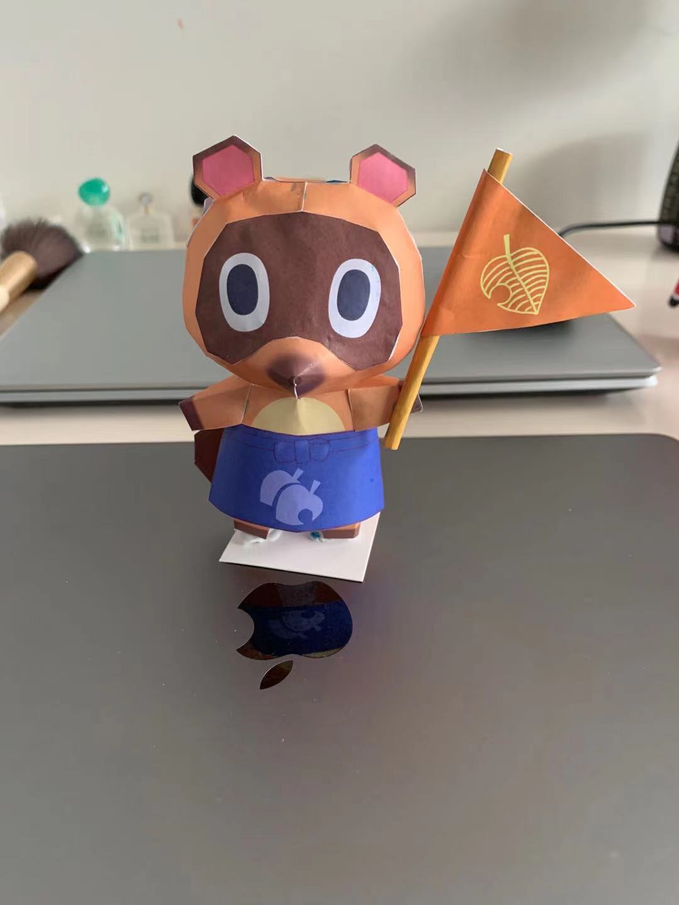 1. 奸商2: 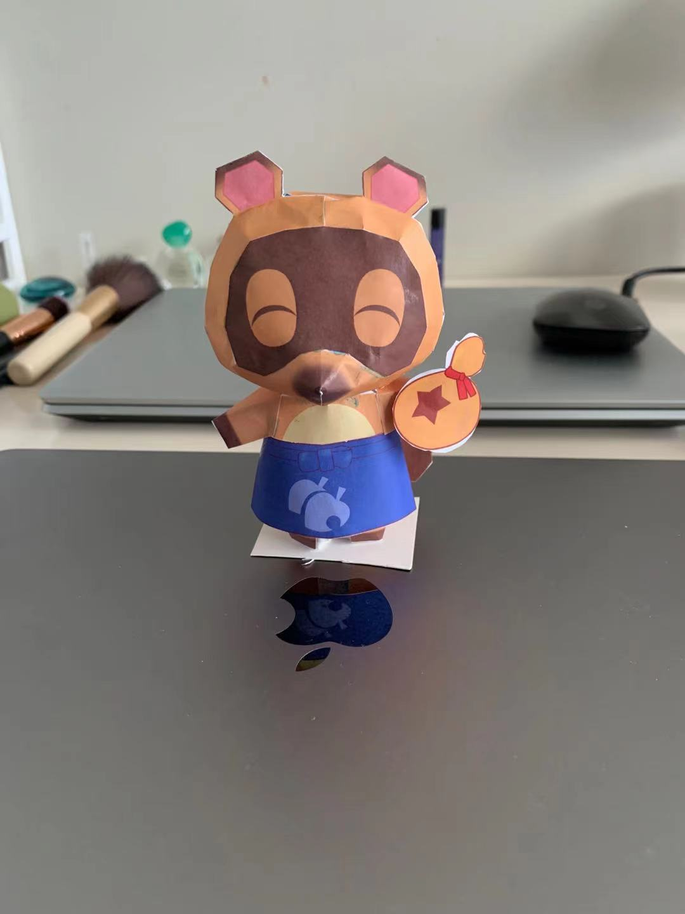 1. 狸克: 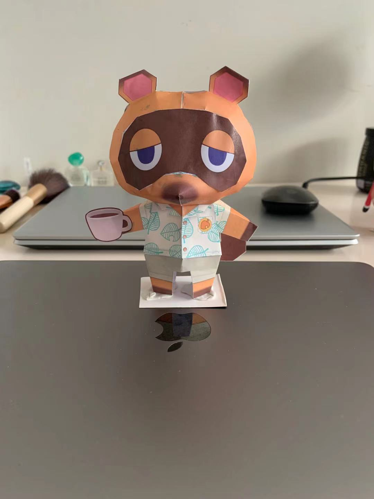 1. 西施惠: 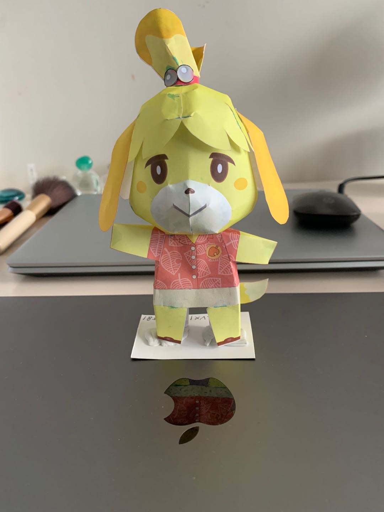 1. 傅达: 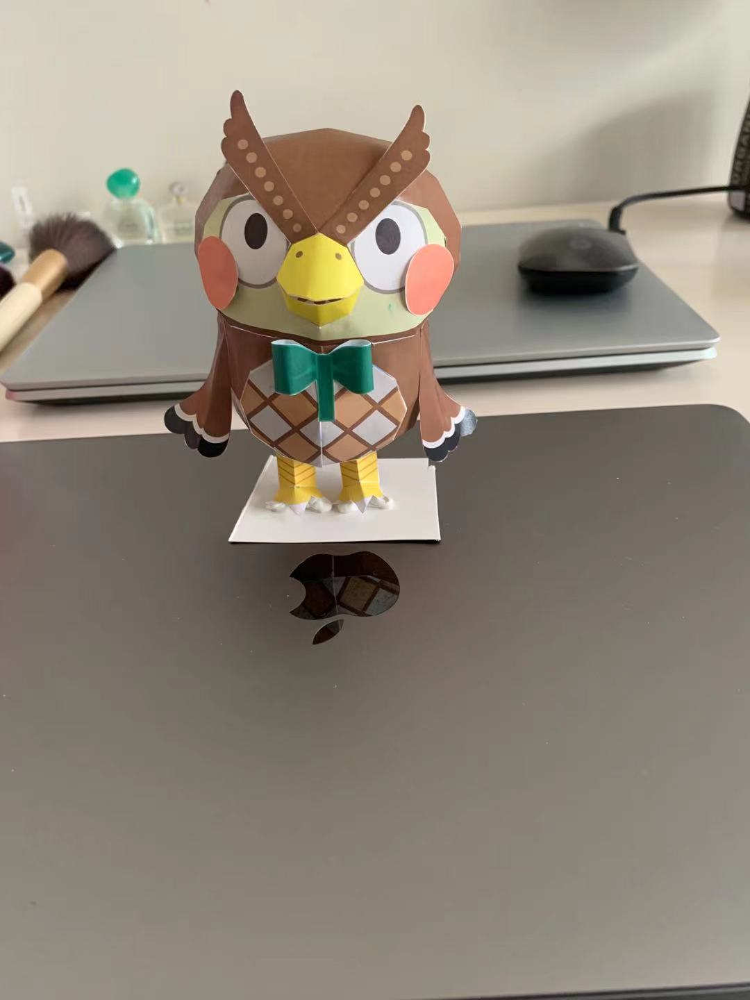 1. 傅珂: 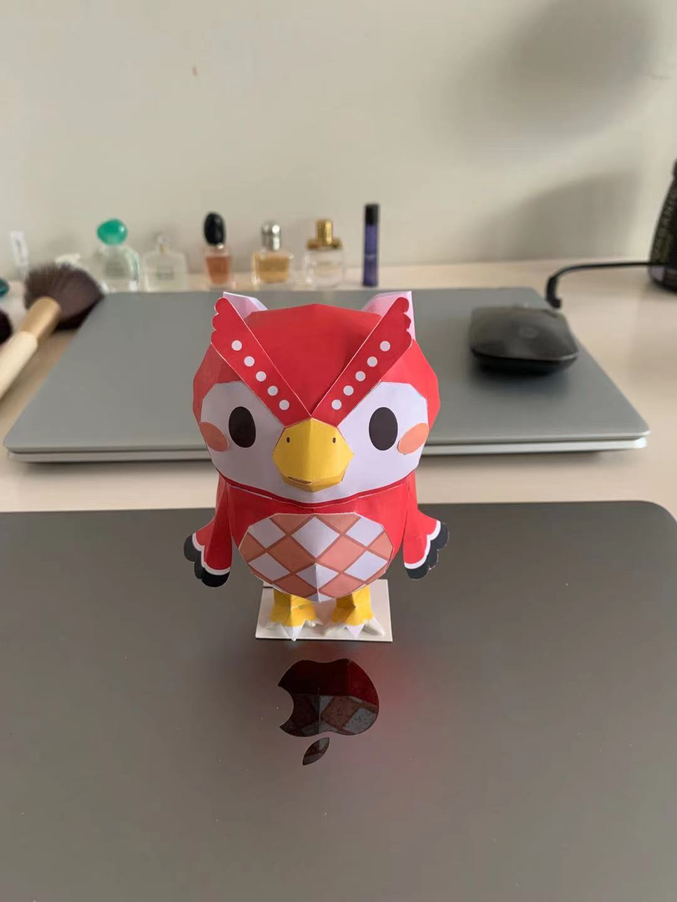
全家福: 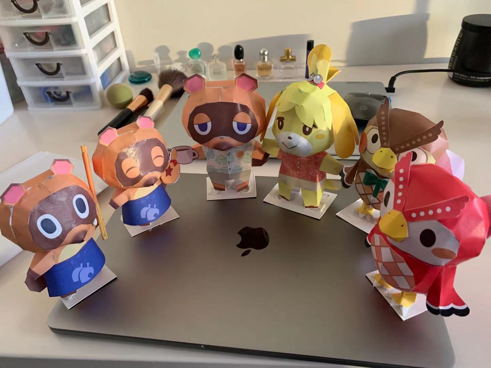
总结
目前整个动森主题的礼盒里有: 1. 动森主题灯 - 19AUD 1. Sanrio Amiibo卡(全6张) - 9.95AUD 1. Animal Crossing DLC: Happy Home Paradise - CD Key - 37.5AUD 1. 3D 纸模 (共6个) 合计 28.35AUD - 图纸: 16.98AUD - 胶水: 3AUD - Sticky Tack: 1.49 AUD - 打印: 0.49 (52+1) = 5.39 AUD 1. 租车: - 7 AUD 1. Costco Choc Rose蛋糕 - 29.99AID
此外购买水果不计入内,共计131.79AUD,对比iCake的蛋糕,动辄130,瞬间感觉太值得了,而且还收获了纸模技能,打开了新世界大门. 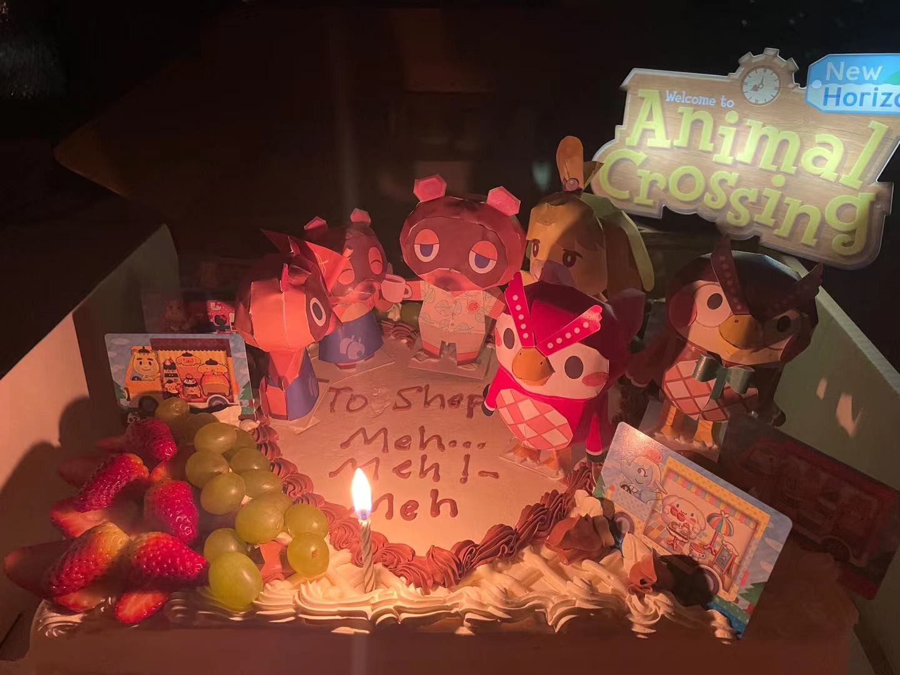 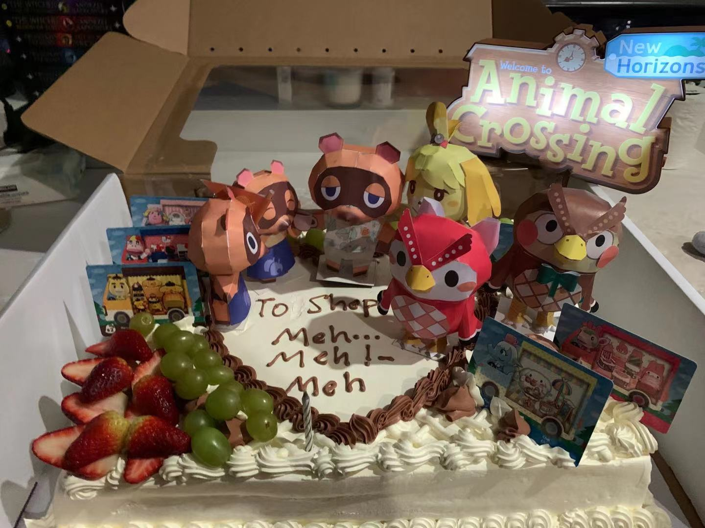 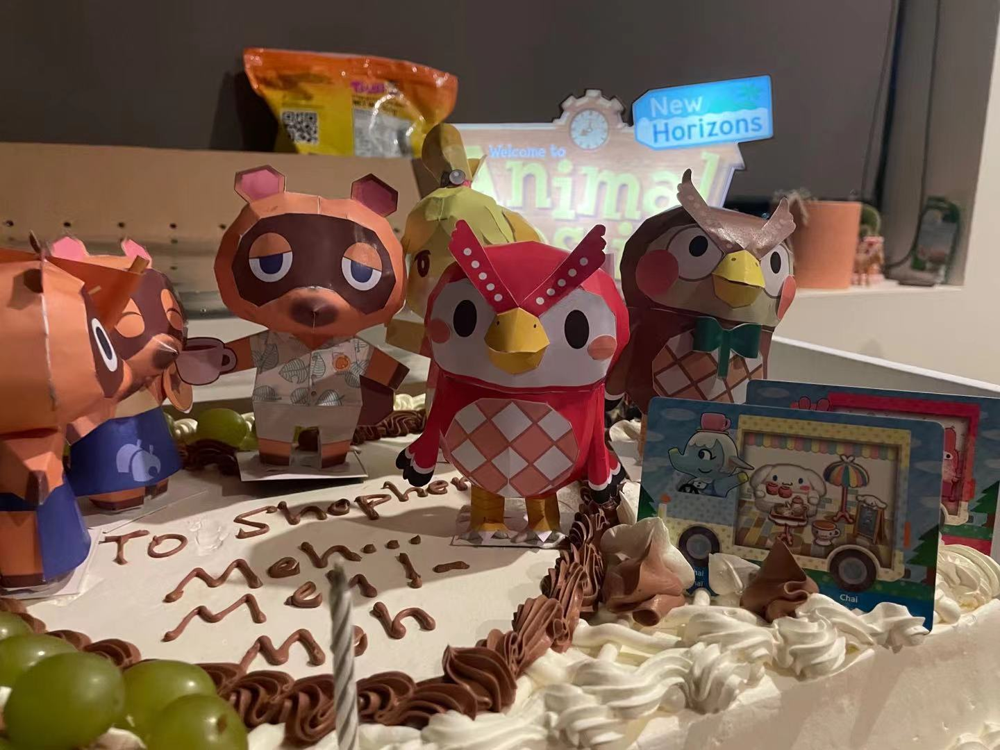